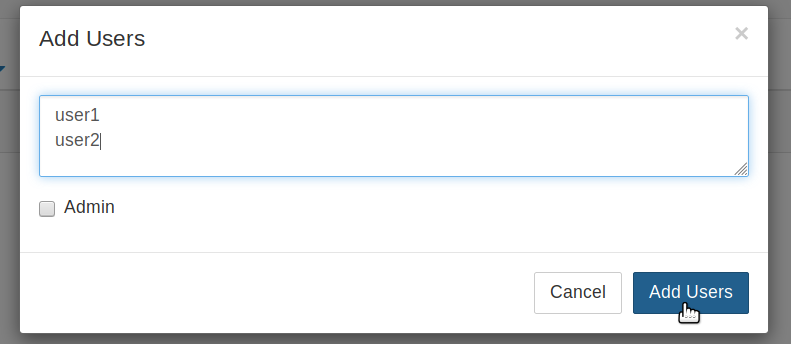

Add / Remove admin users¶
Admin users in TLJH have the following powers:
- Full root access to the server with passwordless
sudo. This lets them do literally whatever they want in the server - Access servers / home directories of all other users
- Install new packages for everyone with
conda,piporapt - Change configuration of TLJH
This is a lot of power, so make sure you know who you are giving it to. Admin users should have decent passwords / secure logni mechanisms, so attackers can not easily gain control of the system.
Important
You should make sure an admin user is present when you install TLJH
the very first time. The :ref:`--admin <topic/customizing-installer/admin>`
flag passed to the installer does this. If you had forgotten to do so, the
easiest way to fix this is to run the installer again.
Adding admin users from the JupyterHub interface¶
There are two primary user interfaces for doing work on your JupyterHub. By
default, this is the Notebook Interface, and will be used in this section.
If you are using JupyterLab, you can access the Notebook Interface by replacing
/lab with /tree in your URL.
First, navigate to the Jupyter Notebook interface home page. You can do this by going to the URL
<my-hub-url>/user/<my-username>/tree.Open the Control Panel by clicking the control panel button on the top right of your JupyterHub.

In the control panel, open the Admin link in the top left.

This opens up the JupyterHub admin page, where you can add / delete users, start / stop peoples’ servers and see who is online.
Click the Add Users button.

A Add Users dialog box opens up.
Type the names of users you want to add to this JupyterHub in the dialog box, one per line. Make sure to tick the Admin checkbox.
Click the Add Users button in the dialog box. Your users are now added to the JupyterHub with administrator privileges!
Adding admin users from the command line¶
Sometimes it is easier to add or remove admin users from the command line (for example, if you forgot to add an admin user when first setting up your JupyterHub).
Adding new admin users¶
New admin users can be added by executing the following commands on an admin terminal:
sudo -E tljh-config add-item users.admin <username>
sudo -E tljh-config reload
If the user is already using the JupyterHub, they might have to stop and start their server from the control panel to gain new powers.
Removing admin users¶
You can remove an existing admin user by executing the following commands in an admin terminal:
sudo -E tljh-config remove-item users.admin <username>
sudo -E tljh-config reload
If the user is already using the JupyterHub, they will continue to have some of their admin powers until their server is stopped. Another admin can force their server to stop by clicking ‘Stop Server’ in the admin panel.